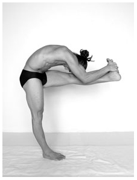
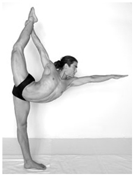
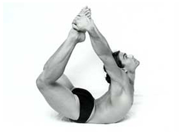
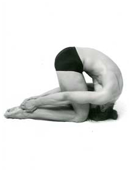
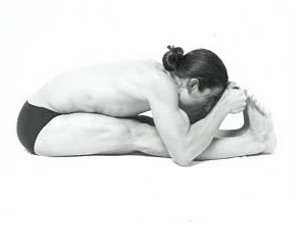

Adult Division (Age 18 & Older) - 5 Compulsory Postures
STANDING HEAD TO KNEE POSE - 4 PARTS

How to perform the posture:
1. Stand with feet together, shift body weight to standing leg and lock the knee (leg straight and thigh muscle contracted). With an interlocked grip pick up the other foot three inches below the top of the toes. Look forward.
2. Kick the heel of the raised foot forward until leg is straight and parallel to floor. Arms straight, eyes focused forward, body weight distributed evenly throughout standing foot. Lock both knees.
3. Wrists straight bend the elbows down towards the floor. Keep the elbows touching against the calf muscle, and extend the elbows below the calf muscle. Both legs straight, both knees locked. Eyes still focused forward.
4. Tuck the chin to the chest and bring the head down, rounding spine, touch the forehead to the knee, both knees locked. Maintain balance for at least 5 counts.
5. To reverse – bring head up, look forward. Arms straight, both legs locked, focus forward. Bend kicking leg and release foot to floor.
(PLEASE NOTE: either leg may kick out-the straight leg must always be closest to the judges)
What the judges will look for:
1. Connection between mind and body – ability to keep mind under control as well as leg/body.
2. Wobbling, shaking, standing foot moving.
3. Kicking out with the wrong leg – the leg furthest from the judges should kick out so that they can see the inside of the kicking leg.
4. Elbows above the calf muscle vs. level with or below the calf.
5. Forehead on shin vs. knee.
6. Fidgeting, readjusting, moving in the posture.
7. Kicking knee not locked.
8. Wrists stretching as opposed to bending when elbows are coming down.
STANDING BOW POSE

How to perform the posture:
1. Distribute body weight evenly on the standing foot, straighten and lock the knee. Grab the inside of the other foot at the ankle with all five fingers together and inside of elbow facing out. Wrists straight.
2. Kick the foot back and up with toes pointed and extend the leg as high as possible.
3. Stretch the free arm forward as far as possible so that the chin is touching with the shoulder, extend the other arm back so that the two shoulders are in one line from the side. Bring the abdomen and chest parallel to floor so that the two feet are in a straight line from the side.
4. Focus out over fingertips.
5. Both legs straight, both legs locked to achieve a standing split.
What the judges will look for:
1. Grip – either too high or too low on leg, or if grip is at the toes instead of the ankle. (Body proportion will affect where the grip is at the completion of the posture-very long leg the hand will need to slide down a little bit but this is different than the hand sliding due to lack of strength or overcompensating).
2. Fumbling with picking up foot or picking up wrong foot and correcting. Leg closest to the judges is the kicking leg.
3. Chin touching the shoulder.
4. Two shoulders in one line from the side.
5. Two feet in one line from the side.
6. Kicking foot in the center of the head from the front.
7. Chest and abdomen parallel to the floor.
BOW POSE

How to perform the posture:
1. Lie on abdomen, stretch chin forward
2. Reach back and grab the outside of both feet 2 inches below the top of the toes. Five fingers together, wrists straight, toes pointed. Six inches between the knees and the toes.
3. Kick both legs up and back.
4. Balance body weight between pelvic bones and lowest rib so that the toes are in the center from the side.
What the judges will look for:
1. Grip – 2 inches below the toes not gripping above the toes.
2. Straight wrist
3. Toes in the center of the body from the side – like a teardrop.
4. Knees and feet even from the side and the front.
5. Balance on the center of abdomen
6. “Two wheels in one base” – wrist and knees 6 inches apart – knees should not open wider as they get higher – keep with body proportion – knees same width as shoulders.
RABBIT POSE

How to perform the posture:
1. Sit on heels with knees and feet together.
2. Grab the heels with the thumbs on the outside, fingers on the inside.
3. Tuck chin to chest, round forward and touch the forehead on the knees, the top of the head touches floor.
4. Pull on the heels, lift hips up, and roll forward. Arms straight, elbows locked. Entire spine stretching from the coccyx to the neck. Lift the shoulders to the ceiling. Thighs perpendicular to floor.
What the judges will look for:
1. 90-degree angle at knees – thighs perpendicular to the floor.
2. Maintain contact between the top of the head and the floor. Stay on the top of head not rolling on the back of head.
3. Forehead touching the knees.
4. Wrists straight – okay to have thumbs touching with index fingers.
5. Shoulders lifted away from ears.
6. Spine completely and symmetrically rounded.
7. Heels may be together or apart.
STRETCHING POSE

How to perform the posture:
1. Sit with spine upright and both legs fully extended forward, feet together.
2. Grab the big toes from the top, with the middle and index fingers, palms facing each other.
3. Pull on the toes. Feet together and flexed. Legs straight, knees locked and heels in the air.
4. With a flat back, stretch upper body forward from the lower spine. Touch the elbows on the floor along side the calf muscles. Bring the body down, stomach over the thighs, chest over the knees, top of the head in line with the toes, forehead touching the toes.
What the judges will look for:
1. Legs straight and thigh muscles contracted – no gap between back of the knees and the floor.
2. Feet together.
3. Feet flexed.
4. Spine straight.
5. Stomach on thighs.
6. Head in line with the toes.
7. Continuous stretching.
Championship Home
|